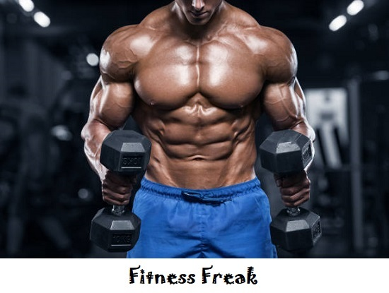

What is a calorie?
It’s a unit of measure for the energy in food. First defined in France in the early 1800s, a food calorie (kilocalorie) is the amount of heat (energy) needed to raise the temperature of 1,000 grams (a liter) of water 1° Celsius. Researchers measure calories by using a “bomb calorimeter,” a small chamber in which a food is burned to heat water; the hotter the water, the higher the calorie count. Food companies today don’t need to burn their products to figure out the calories in them—they simply add up the calories of the ingredients, based on standard databases.
A balanced diet is one that fulfills all of a person's nutritional needs. Humans need a certain amount of calories and nutrients to stay healthy.
A balanced diet provides all the nutrients a person requires, without going over the recommended daily calorie intake.
By eating a balanced diet, people can get the nutrients and calories they need and avoid eating junk food, or food without nutritional value.
The United States Department of Agriculture (USDA) used to recommend following a food pyramid. However, as nutritional science has changed, they now recommend eating foods from the five groups and building a balanced plate.
HEALTH AND FITNESS

Being healthy and fit in simple terms means taking good care of the body. We should remember that a healthy mind resides only in a healthy body. Good health of both mind and body helps one maintain the required energy level to achieve success in life. All of us must strive to achieve wholesome health.
Protecting your body from the intake of harmful substances, doing regular exercises, having proper food and sleep are some of the important instances that define a healthy lifestyle. Being fit allows us to perform our activities without being lethargic, restless or tired.
A healthy and fit person is capable of living the life to the fullest, without any major medical or physical issues. Being healthy is not only related to the physical well-being of a person, it also involves the mental stability or the internal peace of a person.
Generally, a healthy diet consists of taking a proper and healthy food which includes eating green and fresh vegetables, fruits, having milk, eggs, minerals, proteins and vitamins essential for a human’s lifestyle. Practicing Yoga including regular exercises in your daily routine also help you maintain your desired fitness, blood sugar and immunity level.
Healthy habits improve your physical appearance, mental stability, ability to perform activities in a better way, which help you lead a stress-free lifestyle, maintaining happy moods, high energy levels, etc. Each individual should take of one’s health on a priority; no single day should be skipped for making efforts on maintaining physical and mental fitness. Being happy is directly related to boosting your mental strength and health, so happiness can be considered as the result as well as the part of a healthy and fit lifestyle.
Conclusion: Health is the most important thing that a person should take care of. Leading a healthy lifestyle leads to happiness, success and achievements
Here are 20 reasons why getting fit is the best decision you’ll ever make:
1.You only have one body and you have to live in it for the rest of your life. Why not treat it with respect?
2.Being active helps to boost your “good” cholesterol (high-density lipoprotein) and reduces your “bad” cholesterol.
3.Exercise increases the release of endorphins, which boosts mood. (Hit the gym when you’re stressed or in a bad mood for instant relief!)
4.Building muscle increases your body’s basal metabolic rate (BMR), so you can burn more calories while you’re resting. So get lifting those weights!
5.Exercise boosts energy levels. Ironic, right? Working your heart and lungs releases more nutrients and oxygen into your bloodstream so more energy for you!
6.Getting fit helps to prevent chronic health conditions, such as high cholesterol, obesity, and joint problems.
7.You’ll look amazing in (and out of) clothes. ‘Nuff said.
8.Exercise is a great bonding experience for friends and family. Volleyball, ballroom dancing, half-marathons…oh my!
9.Getting fit can help boost your self-confidence. You hot thing!
10.Speaking of being hot, exercise increases libido and puts the spice back into the bedroom. Meow.
11.The chance of physical injury decreases. Strong muscles mean less pressure on major joints like knees.
12.Reduced risk of cardiovascular problems, such as heart disease and stroke. Show your heart some love.
13.This one’s for the ladies: being fit reduces the risk of getting osteoporosis. Weight training helps to build muscles which pull on the bone, forcing bones to become stronger and the chance of fragility and fractures is much less.
14.Okay, okay. You’ll probably get a leaner, flatter stomach (maybe a six-pack!) due to less body fat.
15.Insomniacs unite! Exercise helps improve sleep patterns.
16.Depression and anxiety symptoms are reduced.
17.You’ll look amazing in a bikini or those jeans you haven’t worn since ’87.
18.You can have so much more fun in life! No more huffing and puffing during that soccer game or casual Saturday hike.
19.You’ll live longer.
20.You can be a source of inspiration for those who want to get fit, but don’t believe they can do it or need an extra push to get there. Feels good, huh?